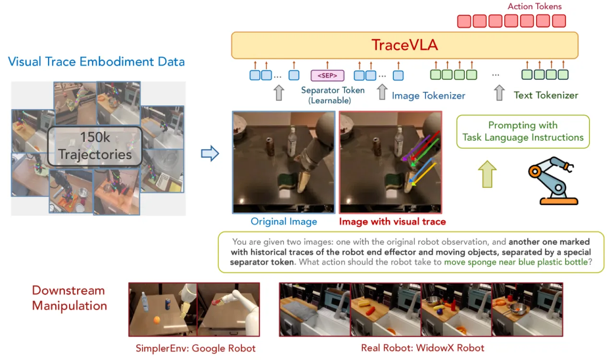
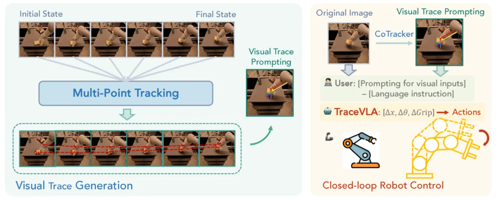
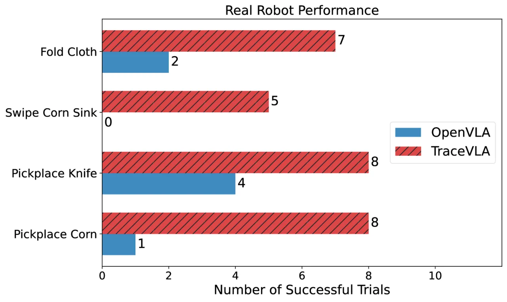
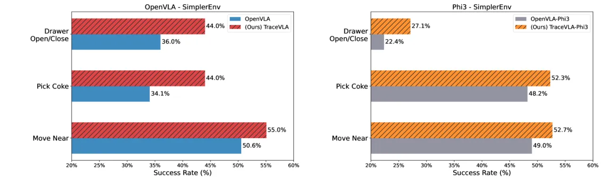

TraceVLA 提出 visual trace prompting（视觉轨迹提示）——利用 Co-Tracker 提取历史帧中的点轨迹，并将其叠加到当前观测图像上，再输入给 VLA 模型。与仅依赖当前帧的基线相比，TraceVLA (7B) 在 SimplerEnv 137 项配置上平均提升约 10%，在真实 WidowX-250 机器人任务上成功率提升 3.5×。
大型视觉-语言-动作（VLA）模型在机器人操控领域展现出强大的泛化能力，但它们往往只"看当下"——忽视了机器人自身的历史运动轨迹，导致决策更多是对当前帧的被动反应，而非对空间历史的主动推理。
"VLA-powered robots often struggle to maintain awareness of their past movements, leading to decisions that are more reactive to current inputs rather than informed by spatial history."
已有方法尝试将历史帧拼接输入或用文本坐标描述轨迹，但效果有限：拼接六帧历史图像反而使性能下降 6%；文本轨迹描述仅带来约 2.4% 的提升。根本原因在于 VLA 的 backbone（视觉编码器）并未针对时序感知专门训练，无法从原始图像差异中有效提取运动信息。

TraceVLA 在不改变 VLA 模型结构的前提下，通过"输入层视觉增强"注入历史运动信息：用 Co-Tracker 从历史帧中提取稠密点轨迹，过滤出活跃轨迹后叠加到当前观测帧，再将原始帧与叠加帧组成双图像序列输入模型。

使用 Co-Tracker 对过去 N 帧（默认 N=6）进行稠密点跟踪，输出每个采样点在各历史帧的 2D 位置序列。Co-Tracker 是专门针对视频跟踪优化的模型，能可靠地跨帧定位物体与末端执行器。
计算每个点在历史帧中的总像素位移；仅保留位移超过阈值 κ 的点轨迹。此步骤排除静态背景，聚焦于末端执行器及与任务相关的运动对象。
将过滤后的轨迹以彩色线段渲染在当前观测帧上，生成"轨迹叠加帧"。模型接收 [原始帧 | separator token | 轨迹叠加帧] 的双图像序列，其中 separator token 帮助模型区分两种信息来源。
以概率 α 随机丢弃训练样本中的视觉轨迹（仅输入原始帧），使模型在推理时 Co-Tracker 跟踪失败或轨迹缺失的情况下仍能正常工作，增强鲁棒性。
TraceVLA 在 OpenVLA（基于 Prismatic 7B VLM）基础上 fine-tune，训练数据为来自 Open X-Embodiment 数据集的 150K 机器人操作轨迹。同时提供轻量版 TraceVLA-Phi3（4B），基于 OpenVLA-OFT 框架，具有更低推理延迟。视觉编码器与语言模型权重均参与微调。
在三个评测维度上全面验证：仿真 SimplerEnv（137 配置）、LIBERO 四套基准（细粒度 fine-tune 场景），以及真实 WidowX-250 机械臂（8 项操作任务，含训练内与训练外任务）。
| 任务 | OpenVLA (7B) | TraceVLA (7B) | Δ |
|---|---|---|---|
| Move Near | 47.1% | 53.7% | +6.6% |
| Pick Coke Can | 15.3% | 28.0% | +12.7% |
| Open/Close Drawer | 49.5% | 57.0% | +7.5% |
| Overall | 40.2% | 47.7% | +7.5% |
| 任务 | OpenVLA-Phi3 (4B) | TraceVLA-Phi3 (4B) | Δ |
|---|---|---|---|
| Move Near | 46.1% | 50.4% | +4.3% |
| Pick Coke Can | 46.7% | 52.2% | +5.5% |
| Open/Close Drawer | 22.5% | 31.0% | +8.5% |
| Overall | 39.9% | 44.0% | +4.1% |
| Suite | OpenVLA | TraceVLA | Δ |
|---|---|---|---|
| Spatial | 82.6% | 84.6% | +2.0% |
| Object | 83.8% | 85.2% | +1.4% |
| Goal | 70.4% | 75.1% | +4.7% |
| Long | 45.7% | 54.1% | +8.4% |
| Average | 70.6% | 74.8% | +4.2% |


双图像输入使每个样本的视觉 token 数量翻倍，在 batch size 32、8 张 H100 的配置下，显存消耗额外增加约 10 GB。对于显存受限的训练环境，需适当减小 batch size 或使用梯度检查点。
每个时间步需额外运行 Co-Tracker 进行点跟踪，引入约 0.034 秒的推理开销。对于要求毫秒级响应的高频控制任务，该延迟可能成为瓶颈。
Co-Tracker 在连续 30–40 步后可能丢失部分追踪点，需要定期重新初始化（recalibration）。在需要极长操作序列的任务中，跟踪失效率会上升，影响轨迹质量。
叠加的彩色轨迹线有时会遮挡末端执行器或任务关键物体（如待抓取的小型物体），在视觉密集的场景中可能造成干扰。尽管可视化参数对整体性能影响较小，但极端遮挡情况尚未充分评估。